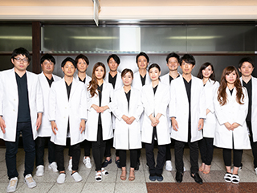

- TOP
- 医院情報｜スタッフ紹介・院内ギャラリー

名古屋市南区道徳にある家族みんなで通える歯医者【名古屋みなみ歯科・矯正歯科】。こちらでは、当院の歯科医師とスタッフをご紹介しています。また、院内の様子がわかるギャラリーもぜひご覧ください。
Staff私たちがお口の健康をサポートします
～ドクター・スタッフ紹介～
ドクター
| 理事長 小池陵馬（コイケリョウマ） | 大西正嗣（オオニシタダシ） |
|---|---|
| 【経歴】 H16年 愛知県立岡崎高校 卒業 H16年 広島大学歯学部 入学 H22年 広島大学歯学部 卒業 H22年 歯科医師免許証 取得 H23年 臨床研修修了 登録 H23年 岡崎エルエル歯科・矯正歯科 副院長 H25年 エスカ歯科・矯正歯科 院長 H28年 医療法人清翔会 設立 H28年 理事長 就任 H28年 名古屋みなと歯科・矯正歯科 開院 H28年 とし歯科 矯正監修 |
【経歴】 H14年 名古屋市立菊里高校 卒業 H15年 愛知学院大学歯学部 入学 H21年 愛知学院大学歯学部 卒業 H21年 歯科医師免許証 取得 H22年 臨床研修修了 登録 H23年 岡崎エルエル歯科・矯正歯科 開院 H25年 エスカ歯科・矯正歯科 非常勤医師 H28年 医療法人正翔会 設立 H28年 理事長 就任 H28年 葵デンタルデザインオフィス 開院 H28年 院長 兼務 |
| 【所属団体】 日本顎咬合学会認定医 PGI名古屋 インビザライン認定医 日本成人矯正学会 日本矯正学会 インコグニート舌側矯正認定医 名古屋市立大学口腔外科非常勤歯科医師 Tweed Pre-Tucson コース |
【所属団体】 日本顎咬合学会認定医 PGI名古屋 インビザライン認定医 日本成人矯正学会 日本矯正学会 SHTA インコグニート舌側矯正認定医 名古屋市立大学口腔外科非常勤歯科医師 Tweed Pre-Tucson コース |
| 院長 大森直樹（オオモリナオキ） | 水谷倫康（ミズタニノリヤス） |
|---|---|
| 【経歴】 H27年 愛知学院大学歯学部 卒業 H27年 歯科医師免許証 取得 H28年 臨床研修修了 登録 H28年 岡崎エルエル歯科・矯正歯科 常勤医師 H28年 エスカ歯科・矯正歯科 非常勤医師 H28年 名古屋みなと歯科・矯正歯科 非常勤医師 H29年 岡崎エルエル歯科・矯正歯科 副院長 就任 |
【経歴】 H26年 愛知学院大学歯学部 卒業 H26年 歯科医師免許証 取得 H27年 臨床研修修了 登録 H27年 エスカ歯科・矯正歯科 常勤医師 H27年 岡崎エルエル歯科・矯正歯科 非常勤医師 H27年 ファミリー歯科 矯正監修 H28年 エスカ歯科・矯正歯科 院長就任 |
| 【所属団体】 インビザライン認定医 WIN舌側矯正システム認定医 |
【所属団体】 インビザライン認定医 インコグニート舌側矯正認定医 PGI名古屋 月星歯科CEセミナーベーシックコース受講 日本顎咬合学会 会員 win舌側矯正システム認定医 osstemインプラントアドバンスコース受講 日本成人矯正学会 会員 |
| 星野匡俊（ホシノマサトシ） | 越知正博（オチマサヒロ） |
|---|---|
| 【経歴】 H26年 愛知学院大学歯学部 卒業 H26年 歯科医師免許証 取得 H27年 臨床研修修了登録 H27年 エスカ歯科・矯正歯科 常勤医師 H27年 岡崎エルエル歯科・矯正歯科 非常勤医師 H28年 名古屋みなと歯科・矯正歯科 院長 |
【経歴】 H27年 愛知学院大学歯学部 卒業 H27年 歯科医師免許証 取得 H28年 臨床研修修了 登録 H28年 エスカ歯科・矯正歯科 常勤医師 H28年 岡崎エルエル歯科・矯正歯科 非常勤医師 H28年 名古屋みなと歯科・矯正歯科 非常勤医師 H30年 名駅アール歯科・矯正歯科 院長 就任 |
| 【所属団体】 インビザライン認定医 WIN舌側矯正システム認定医 |
【所属団体】 インビザライン認定医 win舌側矯正システム認定医 Morita Practice Course Basic 受講 OSSTEM Implant Prosthetics Training Seminar 受講 |
| 平田貴大（ヒラタタカヒロ） | 清水（シミズ） |
|---|---|
| 【経歴】 H23年 愛知学院大学歯学部 卒業 H23年 歯科医師免許証 取得 H25年 臨床研修修了 登録 H25年 オカダ歯科クリニック 勤務医 H27年 岡崎エルエル歯科・矯正歯科 常勤医師 H27年 エスカ歯科・矯正歯科 非常勤医師 H28年 岡崎エルエル歯科・矯正歯科 院長 就任 H28年 とし歯科 矯正監修 H28年 葵デンタルデザインオフィス 非常勤医師 |
【経歴】 H27年 昭和大学歯学部 卒業 H27年 歯科医師免許証 取得 H28年 臨床研修修了 登録 H28年 エスカ歯科・矯正歯科 常勤医師 H28年 岡崎エルエル歯科・矯正歯科 非常勤医師 H28年 名古屋みなと歯科・矯正歯科 非常勤医師 H31年 エスカ歯科・矯正歯科 副院長 |
| 【所属団体】 インビザライン認定医 インコグニート舌側矯正認定医 PGI名古屋 |
【所属団体】 インビザライン認定医 日本臨床歯周病学会 会員 PGI名古屋 osstemインプラントベーシックコース受講 MDIベーシックコース受講 日本歯周病学会 |
| 大道（オオミチ） | 鈴木（スズキ） |
|---|---|
| 【経歴】 H27年 朝日大学歯学部 卒業 H27年 歯科医師免許証 取得 H28年 臨床研修修了 登録 H28年 岡崎エルエル歯科・矯正歯科 常勤医師 H28年 エスカ歯科・矯正歯科 非常勤医師 H28年 名古屋みなと歯科・矯正歯科 非常勤医師 H29年 葵デンタルデザインオフィス 非常勤医師師 |
【経歴】 H28年 大阪大学歯学部 卒業 H28年 歯科医師免許証 取得 H29年 臨床研修修了 登録 H29年 岡崎エルエル歯科・矯正歯科 常勤医師 H29年 エスカ歯科・矯正歯科 非常勤医師 H29年 名古屋みなと歯科・矯正歯科 非常勤医師 H29年 葵デンタルデザインオフィス 非常勤医師 H29年 名駅アール歯科・矯正歯科 非常勤医師 H31年 名古屋みなと歯科・矯正歯科 副院長 就任 |
| 【所属団体】 インビザライン認定医 口腔ボツリヌス治療 受講 口腔ヒアルロン酸治療 受講 |
【所属団体】 |
| 荒木孝之（アラキタカユキ） | 梅田（ウメダ） |
|---|---|
| 【経歴】 H27年 愛知学院大学歯学部 卒業 H28年 歯科医師免許証 取得 H29年 臨床研修修了 登録 H29年 エスカ歯科・矯正歯科 常勤医師 H29年 岡崎エルエル歯科・矯正歯科 非常勤医師 H29年 名古屋みなと歯科・矯正歯科 非常勤医師 H29年 名駅アール歯科・矯正歯科 非常勤医師 |
【経歴】 H25年 愛知学院大学歯学部 卒業 H25年 シバタ歯科 研修医 H26年 左京山歯科 勤務 H28年 医療法人清翔会 非常勤医師 ケンデンタル 非常勤医師 H29年～ 医療法人清翔会 常勤医師 |
| 【所属団体】 インビザライン認定医 |
【所属団体】 |
| 石榑（イシグレ） | 英（ハナブサ） |
|---|---|
| 【経歴】 H28年 朝日大学歯学部 卒業 H29年 歯科医師免許取得 H30年 臨床研修修了 登録 H30年 岡崎エルエル歯科・矯正歯科 常勤医師 H30年 葵デンタルデザインオフィス 非常勤医師 H30年 エスカ歯科・矯正歯科 非常勤医師 H30年 名古屋みなと歯科・矯正歯科 非常勤医師 |
【経歴】 H30 松本歯科大学卒業 H30 歯科医師免許取得 H31 愛知学院大学歯学部臨床研修終了 H31 名駅アール歯科・矯正歯科 常勤医師 H31 エスカ歯科・矯正歯科 非常勤医師 H31 名古屋みなと歯科・矯正歯科 非常勤医師 H31 葵デンタルデザインオフィス 非常勤医師 H31 岡崎エルエル歯科・矯正歯科 非常勤医師 |
| 【所属団体】 | 【所属団体】 |
| 杉山（スギヤマ） |
|---|
| 【経歴】 H30 愛知学院大学歯学部 卒業 H30 歯科医師免許 取得 H31 医療法人あたげ会小島歯科 臨床研修終了 H31 岡崎エルエル歯科・矯正歯科 常勤医師 H31 葵デンタルデザインオフィス 非常勤医師 H31 名駅アール歯科・矯正歯科 非常勤医師 H31 エスカ歯科・矯正歯科 非常勤医師 H31 名古屋みなと歯科・矯正歯科 非常勤医師 |
| 【所属団体】 |